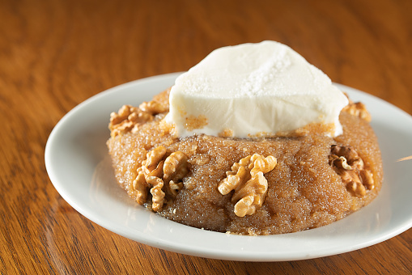

Balık sofralarının baş tatlısı, tatlı krizlerinin bir numaralı çözümü, komşu ikramlarının en sevileni, anında kavrulan ev yapımı irmik helvası tarifi sizlerle..

İrmik helvası
Malzemeler
- Yarım su bardağı tuzsuz fıstık
- 3 kaşık tereyağı
- 1,5 su bardağı irmik
Şerbet için malzemeler
- 1,5 su bardağı şeker
- 1,5 su bardağı su
- 1,5 su bardağı süt
Nasıl yapılır?
- Şerbetimizi hazırlamak için tabiki ilk olarak suyu ve sütü bir sos tenceresine alıyoruz.
- Ardından 1,5 su bardağı şekerimizi ilave ediyoruz. Biraz karıştıralım şeker dibe yapışmasın ve bırakalım kaynasın.
- Tereyağını ocağa koyup içinde fıstıkları biraz kavurun.
- İrmiği üzerine ekleyip kısık ateşte 20 dakik boyunca biraz kızarana kadar karıştırın.
- Daha sonra helvanın altı kısıktayken yavaşça şerbetini dökerek karıştırın.
- Bu şekilde biraz karıştırmaya devam ettikten sonra şerbetini çekip kıvamına gelince ocağı kapatın, ve üzerine kapak kapatıp irmiklerin iyişe şekerle özdeşleşmesini sağlayın.
- İşte helva hazır dilerseniz cevizle süsleyip, dondurma eşliğinde de sunumunuzu yapabilirsiniz.
İŞTE PÜF NOKTALAR!!!
- En önemli püf noktası ölçülere uymaktır. aksi taktirde şerbeti az olduğunda helvanız kuru olacak, fazla olduğunda ise şerbetin hepsini çekmeyecektir.
AFİYET OLSUN